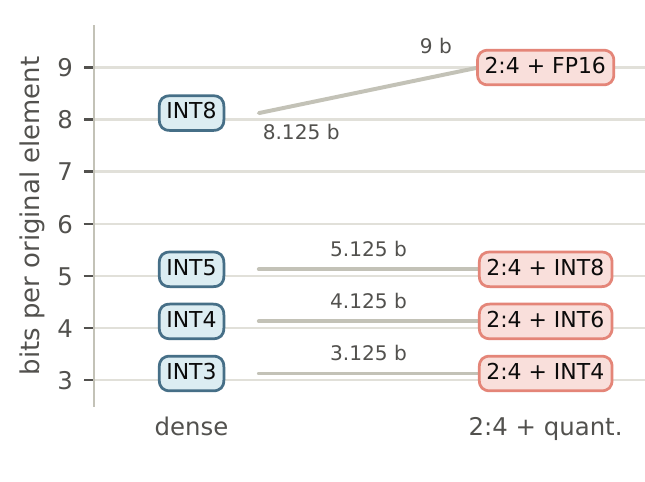
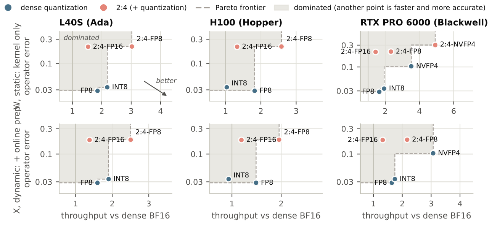
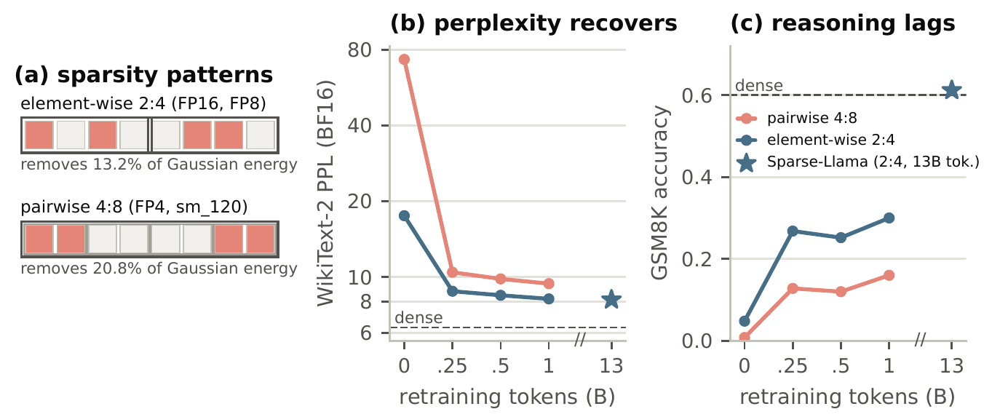

目录 · 7 节
1问题：硬件还在支持，软件已经放弃2怎样比才算公平3还能降精度时：降一档总是更好4为什么输：删掉的能量补不回来5到了最低精度：真能提速，但必须重训6Blackwell 的稀疏 FP4 更难用7局限与实践意义NVIDIA 从 Ampere 起的 GPU 都支持 2:4 稀疏：矩阵乘法里一个操作数沿累加方向每 4 个元素只保留 2 个非零值，张量核心按标称可以快一倍。它可以和量化叠加，所以部署时真正要回答的是：在当前精度上，下一步是加 2:4，还是降到更低一档精度？这篇独立研究者的论文在 Llama-3.1-8B-Instruct 和 Qwen3-8B 上，按“相同存储位数（稀疏的位置索引也算进去）”和“相同标称算力档位”两种口径，对一层 transformer 里全部六类矩阵乘法操作数做了比较，并在 L40S、H100、RTX PRO 6000 三代 GPU 上实测速度，总共超过 22 万个配置。结论很干脆：只要还有更低一档精度可用，加 2:4 既更不准也更慢。只有到了硬件支持的最低精度（Ada 和 Hopper 上是 FP8），2:4 才有用武之地：H100 上用 vLLM 服务的 2:4 加 FP8 模型，prefill 吞吐比稠密 FP8 高 27%，GSM8K 准确率相当。但这个模型是在 130 亿 token 上重新训练过的，一次性剪枝的模型完全不能用。
1. 问题：硬件还在支持，软件已经放弃
一边是 NVIDIA 每一代 GPU 都保留稀疏张量核心，Blackwell 还加了稀疏 FP4；另一边，2026 年 vLLM 和 LLM Compressor 因为用的人太少，删掉了 2:4 支持。两边分歧这么大，说明缺一个在真实硬件上的直接对比。
已有的剪枝与量化对比大多按“名义压缩率”比，主要看权重，而且没有把“加 2:4”和“降一档精度”放在同一张卡上实测。作者指出四个容易被忽略的地方。第一，2:4 每个保留值旁边都要存位置索引，所以它占的位数比稠密的一半多。第二，两种做法都号称让吞吐翻倍，但数据手册不说实际能兑现多少。第三，推理时大多数操作数（激活、Q、K、V、注意力概率）是现算出来的，每次矩阵乘法前都要现场剪枝和压缩，只测矩阵乘法本身看不到这部分时间。第四，硬件规定了哪个操作数能稀疏、沿哪个方向分组，所以按整个张量统计的指标（比如峰度）反映不出 2:4 实际删掉了什么。
2. 怎样比才算公平
第一种口径是相同位数，用来比省显存。每种格式按每个原始元素实际存了多少位计费，值、索引、缩放因子都算。2:4 只保留一半元素，但每个原始元素要多 1 位索引，所以省下的位数不到一半。算下来，“2:4 加 2m 位”正好等于“稠密 m+1 位”：2:4 加 INT8 的成本等于稠密 INT5，2:4 加 INT4 等于 INT3，2:4 加 FP16 比 FP8 还贵。

所以在相同存储下，真正的选择是“丢掉一半元素、剩下的用两倍精度存”，还是“保留全部元素、每个多存 1 位”。
第二种口径是相同算力档位，用来比提速：按数据手册的标称吞吐配对。2 倍档是 2:4 加 FP16 对稠密 FP8 或 INT8；4 倍档是 2:4 加 FP8 对稠密 4 位浮点，后者只有 Blackwell 有。
两种口径下，精度都看算子级相对误差，也就是和 FP32 参考输出比。作者定义 R 为“最好的 2:4 配置的误差”除以“最好的量化配置的误差”，R 小于 1 表示 2:4 更好。为了不偏向任何一方，双方各自从同等投入的方法里挑最好的：2:4 一侧试幅值剪枝、Wanda、SparseGPT，量化一侧试四舍五入、GPTQ、AWQ，都用同一批 C4 数据校准。速度用 cuSPARSELt 的稀疏矩阵乘法，现算的操作数两边都要算上在线剪枝或在线量化的时间。
3. 还能降精度时：降一档总是更好
在精度上，相同位数下，2:4 在每个存储预算、两个模型上都输。8 位时误差差一个数量级以上，位数越低差距越小，但始终没有反超，最接近的一组 R 仍略高于 1。相同档位下更明显：2 倍档里，2:4 加 FP16 的误差是稠密 FP8 的 5 到 16 倍，六类操作数无一例外。在所有算力对比里，2:4 赢下的几次，对手都是较弱的格式（2 的幂缩放的 MXFP4，以及按行缩放的 INT8）；对上 FP8 和 NVFP4，一次都没赢。
算子误差不等于模型质量，所以作者又在最接近打平的 15 组配置上做了整模型测试，这是对 2:4 最有利的情形。GSM8K 上，2:4 没有一次显著好于量化，有 7 次显著更差。2:4 在困惑度或 RULER 上占优的情形，多数出在注意力概率上：每 4 个分数只留最大的 2 个，相当于把注意力变尖，长上下文检索和困惑度会变好，但对推理从来没有帮助。
实测速度同样对 2:4 不利，下表是“对手耗时除以 2:4 耗时”，大于 1 表示 2:4 更快（Llama-3.1-8B 投影层，2K 到 16K token 的中位数）：
| GPU | 2 倍档 W | 2 倍档 X | 4 倍档 W | 4 倍档 X | 在 FP8 上加 2:4 | 在 NVFP4 上加 2:4 |
|---|---|---|---|---|---|---|
| L40S | 0.89 | 0.89 | – | – | 1.65 | – |
| H100 | 0.74 | 0.80 | – | – | 1.42 | – |
| RTX PRO 6000 | 0.84 | 0.85 | 0.66 | 0.70 | 1.33 | 1.40 |
W 表示稀疏的是权重，X 表示稀疏的是激活（两边都算在线预处理）。前四列全都小于 1，说明在同一档位上，标称一样快的两种做法，稠密低精度实际兑现得更多。H100 上 2:4 加 FP16 只有稠密 FP8 速度的 74%。

把精度和速度放在一起看，只要还有更低的稠密精度可选，每一个 2:4 配置都落在灰色区域里，总有某种稠密格式又快、误差又小好几倍。2:4 只在最右端出现在前沿上，也就是叠加在最低精度之上的时候。
在线剪枝的实现也很关键。作者写了一个融合内核，读一次输入、写一次保留值和索引，速度接近显存拷贝带宽；cuSPARSELt 自带的剪枝压缩路径和 PyTorch 的半结构化转换要慢好几倍，会把稀疏矩阵乘法省下的时间大部分吃掉。注意力概率 P 更不划算：在线剪枝压缩后，2:4 只有稠密速度的一半左右，所以不能把 P 单独当作稀疏操作数来用。
4. 为什么输：删掉的能量补不回来
原因是一个简单的不对称。量化保留每个值、只做取整，每多 1 位，误差就减半。2:4 直接删掉一半的值，删掉的那部分彻底丢了，给剩下的值再多位数也补不回来。作者把每 4 个元素里被删掉的 2 个值的平方和占整个张量平方和的比例，称为“2:4 能量损失”。对独立高斯数据，这个比例是 13.2%，和位数无关。在高斯数据上，2:4 一侧的误差在各个预算下都在 36% 到 37%，而同位数的稠密格式从 INT8 的 0.6% 到 INT3 的 27.4%。两者要到 3 位以下才会相交，而没有任何稠密张量核心支持那么低的精度。
用这个能量损失加上量化误差，可以不拟合任何参数、直接从张量算出预测的 R。它和实测 R 的排序相关系数是 0.93，区分 2:4 赢和输的 AUC 是 0.95。不过 2:4 只在 3% 的点上赢，所以这个判据能解释差距有多大、为什么，却判不准势均力敌的情况。作为对照，以前文献提出的整体峰度和结果几乎不相关。决定胜负的是张量在硬件分组方向上的局部结构，而不是它整体的分布形状。
这个分析还预测了 Hadamard 旋转（低比特量化前常用的去离群值步骤）的影响。旋转让每组 4 个元素更接近，能量损失变大，同时让量化范围变窄。实测中旋转让 Q、K 和线性层输入的 R 大约翻倍，判据在 87% 的点上猜对了变化方向。实际部署大多会做旋转，所以论文未旋转的结果其实对 2:4 偏乐观。
5. 到了最低精度：真能提速，但必须重训
到了 FP8 或 NVFP4 这条底线，没有更低的稠密格式可换，2:4 只能往上叠，这时它不再有对手。作者把线性层权重做成 2:4，注意力保持 BF16，模型是 Llama-3.1-8B 基座。线性层矩阵乘法在 FP8 上加 2:4 快 1.3 到 1.7 倍，这是本文里 2:4 第一次真正赢。
单张 H100 上的 vLLM 端到端结果，2:4 模型用的是 Sparse-Llama（在 130 亿 token 上重训过的 2:4 Llama）：
| 配置 | 权重显存 (GiB) | prefill (k tok/s) | decode b=1 (tok/s) | decode b=64 (tok/s) | GSM8K |
|---|---|---|---|---|---|
| 稠密 BF16 | 15.0 | 41.4 | 136 | 6,424 | 0.596 |
| 2:4 BF16 | 9.3 | 40.7 | 115 | 6,477 | 0.624 |
| 稠密 FP8 | 8.5 | 58.9 | 198 | 8,556 | 0.568 |
| 2:4 FP8 | 6.1 | 74.6 | 234 | 9,914 | 0.612 |
2:4 加 FP8 比稠密 FP8 的 prefill 快 27%，decode 在批大小 1 和 64 时分别快 18% 和 16%，权重显存少 28%。端到端提升小于矩阵乘法层面的 1.42 倍，因为注意力和其他层没有变小。同样的权重换成稠密内核来跑，加速就消失了，说明收益完全来自稀疏内核。BF16 下 vLLM 的 2:4 路径并不比稠密快，batch 1 时还更慢。
GSM8K 那一列要谨慎看。只测了 250 题，准确率 0.6 左右时标准误约 3 个百分点，0.568 和 0.612 的差距在误差范围内，作者也说没有显著差异。而且 2:4 模型和稠密模型的训练经历不同，所以这里只能说“没有变差”，不能说“2:4 更准”。
重训的代价才是关键。下表是 WikiText-2 困惑度和 GSM8K 准确率（250 题）：
| 底线 | 稠密 | 一次性 2:4 | 重训 2:4（130 亿 token） | 作者重训（10 亿 token） |
|---|---|---|---|---|
| BF16 | 6.31 / 0.600 | – | 8.13 / 0.612 | 8.19 / 0.300 |
| INT4 权重 | 6.90 / 0.540 | 18.61 / 0.032 | 8.45 / 0.580 | 8.53 / 0.292 |
| FP8 | 6.36 / 0.552 | 17.82 / 0.028 | 8.19 / 0.632 | 8.25 / 0.308 |
一次性剪枝在每条底线上都不可用：困惑度翻倍以上，GSM8K 掉到 3% 左右，说明模型基本失去了推理能力。作者自己用 FineWeb-Edu 的 10 亿 token 从稠密模型蒸馏重训，困惑度已经追上 Sparse-Llama（8.25 对 8.19），GSM8K 却只有它的一半（0.308 对 0.632）。

困惑度会高估重训的恢复程度：困惑度在前 2.5 亿 token 就基本恢复了，推理能力却远没有回来，而困惑度曲线不会提示你还差多远。判断稀疏模型重训是否完成，必须加一个推理任务。只稀疏一部分层也绕不开重训：按预测代价从低到高挑一半线性层的计算量做 2:4，只换来 1.14 到 1.25 倍的加速。
6. Blackwell 的稀疏 FP4 更难用
Blackwell 的稀疏 FP4 不是逐元素 2:4，而是“成对 4:8”：每 8 个元素分成 4 对相邻的元素，保留其中 2 对。作者在 RTX PRO 6000 上验证过，逐元素的掩码在这个格式下会算出错误结果。它的内核比稠密 NVFP4 快 1.4 倍，但按对保留比按元素保留丢得更多，因为一对里的两个元素必须同进同出，没法各自挑大的留。高斯数据上它的能量损失是 20.8%，一次性剪枝后困惑度高达 108.83，是逐元素 2:4 的五倍。
已有的模型也帮不上忙。为逐元素 2:4 训练好的 Sparse-Llama 不能直接转过去，转换要丢掉三分之一已经训练好的权重，模型直接坏掉。作者在 10 亿 token 的预算下重训，GSM8K 只恢复到 0.132，而稠密 NVFP4 是 0.460，所以在这个预算下它还不可用。
7. 局限与实践意义
- 只有两个 8B 模型。Blackwell 上的结论受限于 10 亿 token 和一套没调参的重训配方，更长的重训能不能恢复没有验证。
- 4 位整数权重这条底线（主要用于 decode）没有测速度，因为 vLLM 已经删掉了相应的稀疏内核。decode 阶段受显存带宽限制，2:4 只省字节，在有的 GPU 上有帮助、有的反而变慢。
- 速度对比中，稀疏矩阵乘法做了穷举调参，稠密一侧用的是库的默认策略，这对 2:4 有利，结论仍然是 2:4 输。
如果硬件还支持更低一档精度（比如 H100 从 BF16 到 FP8），先降精度，不要加 2:4。已经在 FP8 上部署、prefill 吞吐是瓶颈、并且能拿到充分重训过的 2:4 模型时，2:4 可以带来两到三成的实际提速，但 vLLM 主线已经删掉支持，需要自己维护分支。在 Blackwell 上，目前没有现成的成对 4:8 模型，自己重训的成本和效果都没有保证。评估任何重训后的稀疏模型，都不要只看困惑度。